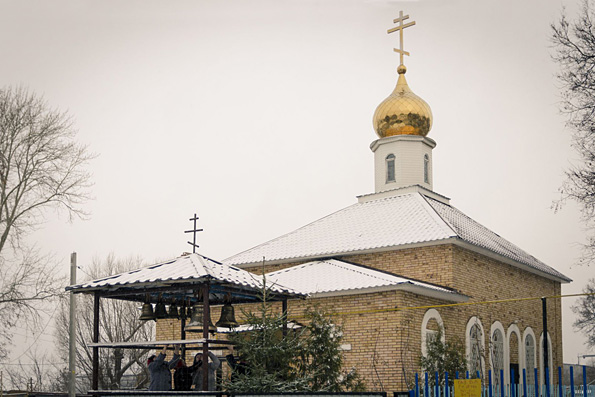

Калейкино — административный центр Калейкинского сельского поселения. Село основали в 1727 году переселенцы из села Русский Акташ. Есть версия, что название восходит к дохристианскому имени Каляй или к выражению «килей пора» («берёзовая роща»). До 1860-х годов жители относились к сословию государственных крестьян: занимались земледелием, скотоводством, было распространено и пчеловодство.